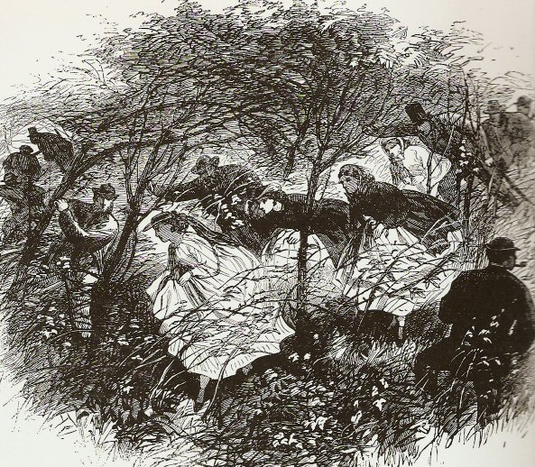

Sunday, February the 8th, 2009
back to: title, date or indexes

I was much taken with this illustration of a Victorian organised fern hunt, reproduced at the excellent Victorian Era blog. It reminded me that Dobson was a great one for fern hunts. Although he was a pamphleteer decisively of the twentieth century, he had about him something of the Victorian, especially at certain periods of his life, such as the two decades or so he spent blasted out of his brain on laudanum, as were most Victorians most of the time, if some accounts are to be believed. Gladstone, to give but one example, regularly made speeches in the House of Commons with his head swimming in an opiate fog. It makes one wonder if we would be better governed today were the illiterate thickos in Parliament to have their brains ravaged and jangled a tad.
In spite of his boundless ignorance of the natural world, or perhaps because of it, Dobson developed quite a taste for fern hunting. In a memorable pamphlet, he described the attraction:
Hunting animals is the sport of fools. Nearly all animals run away when pursued. Ferns, on the other hand, stay right where they are, so you can go crashing through thickets with much gusto, a determined jut to the jaw, every so often emitting cries of panic or revelation, or both, all the while safe in the knowledge that your quarry is not dashing away over the fields, vanishing over the horizon, leaving you and your band of fellow adventurers exhausted and stupid and empty-handed.
Dobson did not always grasp the point of an organised fern hunt, however, and would arrive at the appointed gathering-place armed with a net, or a blunderbuss, or sometimes with a geological hammer. It had to be patiently, and repeatedly, explained to him what a fern was, information he had singular difficulty lodging in his skull, whether or not it was doused with laudanum. In another pamphlet, at another time, for example, he wrote this:
What better sport is there than chasing a wild fern across the countryside, watching it dash away over the fields, vanishing over the horizon, leaving you and your band of fellow adventurers exhausted and happy and empty-handed, but refreshed by bucolic air, panting, drugged up to the eyeballs and ready to go home and write dozens of pages of De Quinceyan babble?
To his credit, Dobson never made any attempt to suppress the pamphlet in which he wrote this drivel, but in any case, like all his works it was soon out of print, and forgotten, just as we have forgotten the delights of organised fern hunts.
Hooting Yard on the Air, June the 10th, 2010 : “The Abominable Example Of Little Beggar Boys” (starts around 07:45)